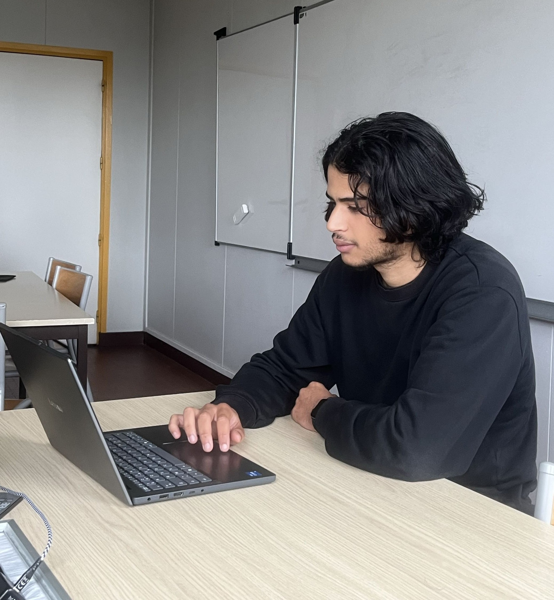
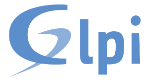
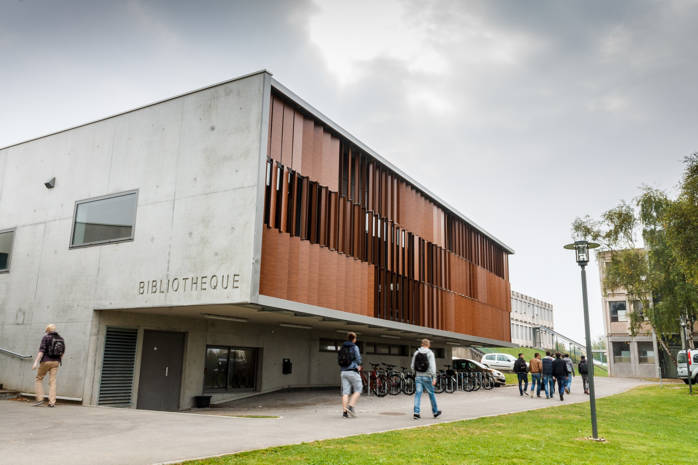

Bonjour, je suis Rayane.
J'organise l'invisible.
Étudiant de 19 ans en BUT 2 Informatique à l'IUT d'Amiens, spécialisé en architecture de bases de données. Mon objectif professionnel : concevoir des infrastructures fiables en devenant Ingénieur / Architecte Data.
« On n'attend pas l'avenir comme on attend un train. L'avenir on le fait. » — Georges Bernanos
Qui suis-je vraiment ?
Je m'appelle Rayane, je suis étudiant en BUT Informatique, et si je devais résumer ma personnalité : je suis quelqu'un de curieux, de persévérant et de profondément attaché à l'entraide. Pour moi, l'informatique n'est pas qu'une question de machines, c'est avant tout un travail d'équipe.
Mes valeurs principales sont la rigueur, la fiabilité et le respect des engagements. Quand je m'investis dans un projet (que ce soit concevoir une base de données ou aider un camarade), j'aime que le travail soit fait proprement et jusqu'au bout. J'accorde beaucoup d'importance à la confiance qu'on me donne.
Ma petite faiblesse attachante ? Je suis parfois tellement concentré et têtu face à un problème technique que je peux totalement oublier la notion du temps (et de manger !). Mais c'est aussi ce qui fait ma force : je lâche rarement l'affaire avant d'avoir trouvé la solution.
C'est cette envie d'apprendre et de partager qui m'a poussé à donner des cours particuliers. Transmettre mes connaissances avec patience et écoute m'a permis de progresser, tout en gardant un vrai lien humain.

Mon parcours
Stage Administrateur Système
ISICOMGestion et sécurisation des infrastructures clients.
BUT Informatique
IUT d'AmiensDéveloppement logiciel, bases de données, réseau.
Soutien scolaire
Cours particuliersPédagogie, explication et accompagnement d'élèves.
Baccalauréat Général
Lycée Jules Uhry — CreilSpécialité NSI & SVT
Ma boîte à outils
Les technologies que je maîtrise pour construire des architectures solides et performantes.
Data & Dev
Infrastructures
 Zabbix
Zabbix
 pfSense
pfSense

GLPIConception
Mes Réalisations
Mise en application concrète. La couleur de chaque projet correspond à une compétence du BUT.
Bilan de compétences BUT
Mon niveau de maîtrise sur les 6 axes du Programme National, acquis au fil de mes projets et de mon stage.
Réaliser
AcquisDévelopper des applications structurées. J'applique le principe du code lisible et maintenable avant de chercher la complexité pure.
Optimiser
AvancéMon point fort. Le projet sur l'algorithme de Dijkstra m'a appris à gérer finement l'empreinte mémoire d'un programme complexe.
Administrer
En progressionDéploiement et sécurisation. Mon stage chez ISICOM (VLANs, monitoring) m'a donné une vision concrète et "terrain" du réseau.
Gérer
ExpertL'architecture des données. Modélisation 3NF, requêtes géospatiales, triggers... J'ai prouvé ma rigueur technique sur mes projets.
Conduire
En progressionConduire un projet de A à Z. Je maîtrise la phase de conception (UML), mais je veux encore approfondir les méthodes Agiles.
Collaborer
AcquisCommuniquer techniquement via Git/GitHub et vulgariser l'information complexe, un atout renforcé par mon expérience en pédagogie.
Réflexion sur mes acquis
Pendant le BUT, je me suis rendu compte que certaines compétences me correspondaient plus que d'autres. J'ai surtout aimé travailler avec les données et résoudre des problèmes techniques.
Mais tout n'a pas été facile. Certains projets m'ont mis en difficulté et j'ai dû apprendre à chercher des solutions par moi-même. Avec le temps, j'ai gagné en autonomie et en confiance. Mon stage chez ISICOM m'a aussi appris à être plus rigoureux, notamment pendant la configuration des VLANs.
Ce parcours m'a aidé à mieux comprendre ce que je veux faire plus tard. En découvrant les métiers autour de la data, j'ai compris pourquoi ce domaine me plaît autant : j'aime organiser les informations et comprendre comment les systèmes fonctionnent ensemble.

Ce qu'on dit de mon travail
Les retours que j'ai pu recevoir lors de ma formation et de mon expérience professionnelle.
L'équipe enseignante de l'IUT souligne régulièrement ma capacité à être un élément moteur au sein de la promotion. Mes professeurs mettent en avant mon approche méthodique, notamment le fait que je prenne toujours le temps de poser les problèmes sur papier avant de commencer à coder. Ils apprécient également mon implication et ma volonté d'aider mes camarades en prenant le temps de leur réexpliquer des concepts complexes.
Mes professeurs
IUT d'AmiensLors de mon stage, l'équipe technique d'ISICOM a particulièrement remarqué la rapidité avec laquelle j'ai su faire preuve d'autonomie. Mon travail sur la sécurisation et la segmentation de leurs réseaux via la mise en place de VLANs a été décrit comme sérieux et fiable. Ils ont également souligné ma curiosité intellectuelle et la facilité avec laquelle je me suis intégré à leur environnement de travail.
L'équipe technique
ISICOMPrêt à collaborer ?
Que ce soit pour une opportunité professionnelle, parler technique ou échanger sur l'architecture de bases de données, n'hésitez pas à m'écrire.